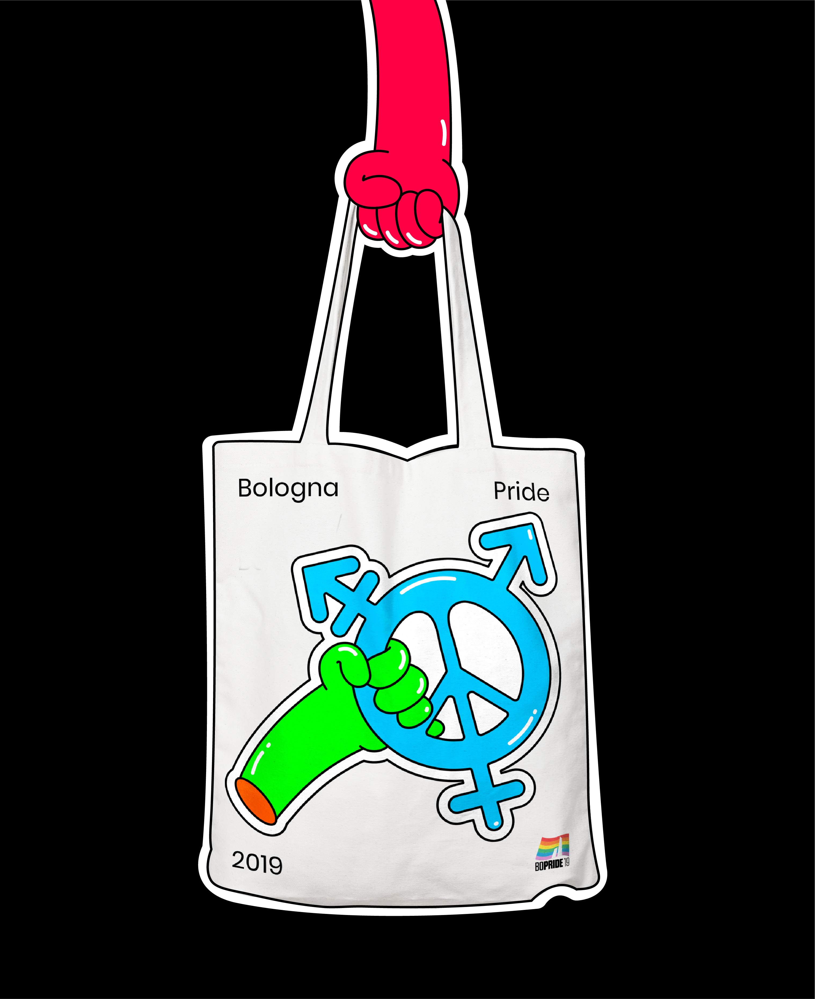
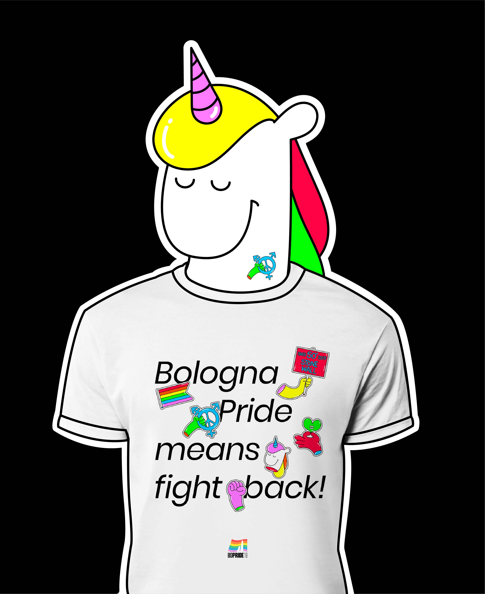
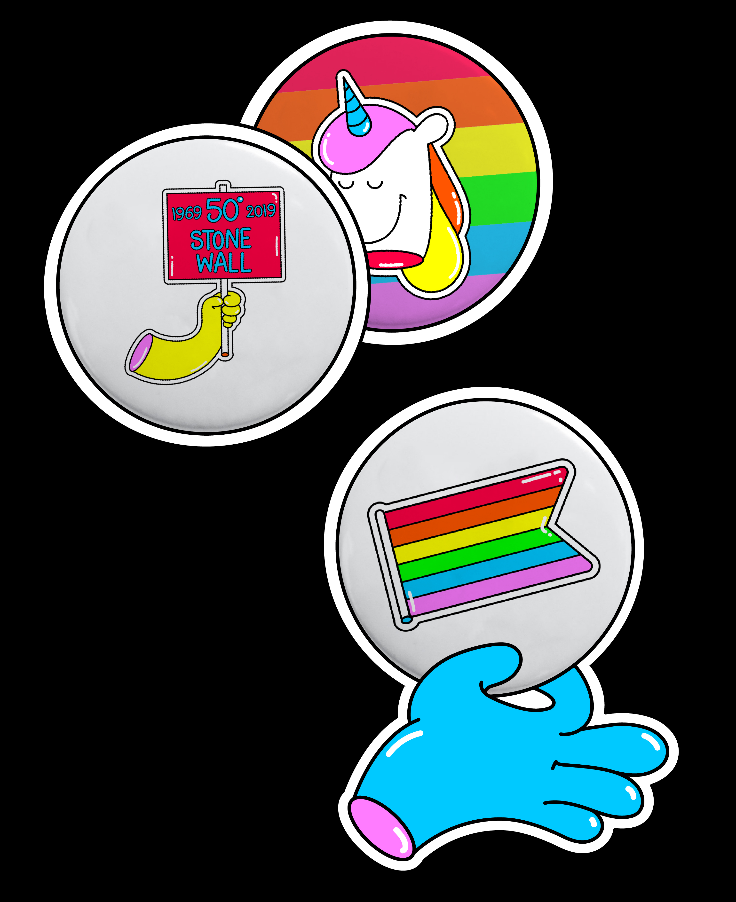

BOLOGNA PRIDE MEANS FIGHT BACK
Year: 2019 / Bologna Pride 2019 competition, rejected proposal
2019 was the 50th anniversary of the Stonewall riots, which are seen by many in the LGBTQ+ community as the genesis of the modern gay rights movement. The claim takes inspiration from an iconic photo shot during the protest. By replacing “Stonewall”pio with “Bologna Pride”, this poster aims to highlight the importance of the Italian city as a pioneer of LGBTQ+ community rights. The illustrations around the claim are a visual reinterpretation of Pride values: freedom, intersectionality, plurality, inclusiveness and fabulousness. The juxtaposition of minimal typographical elements and rainbow coloured illustrations gives the poster a gleeful look, whilst still conveying an important message.

- 
- 
- 